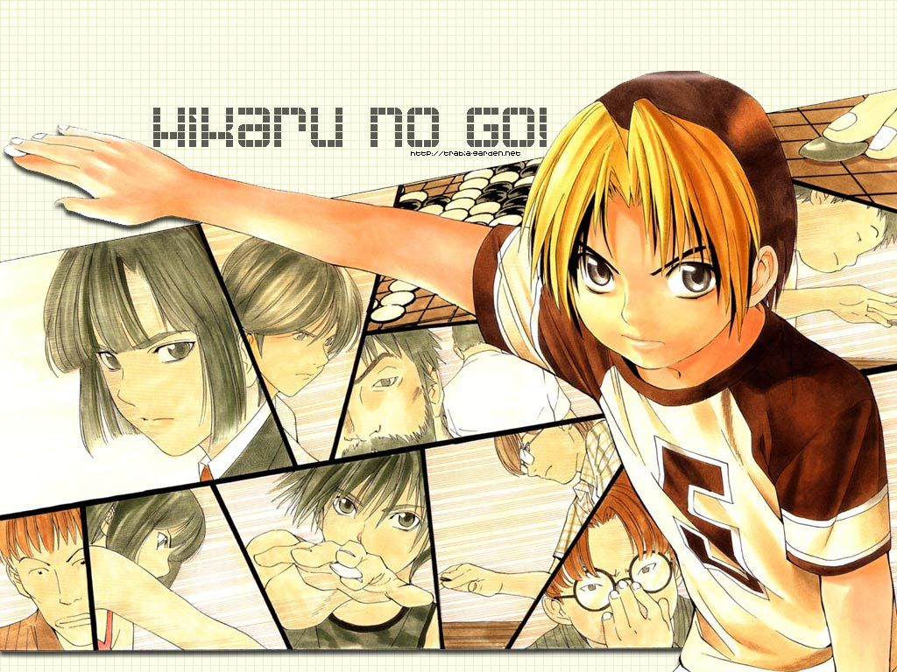
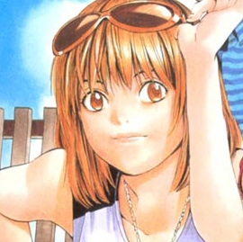
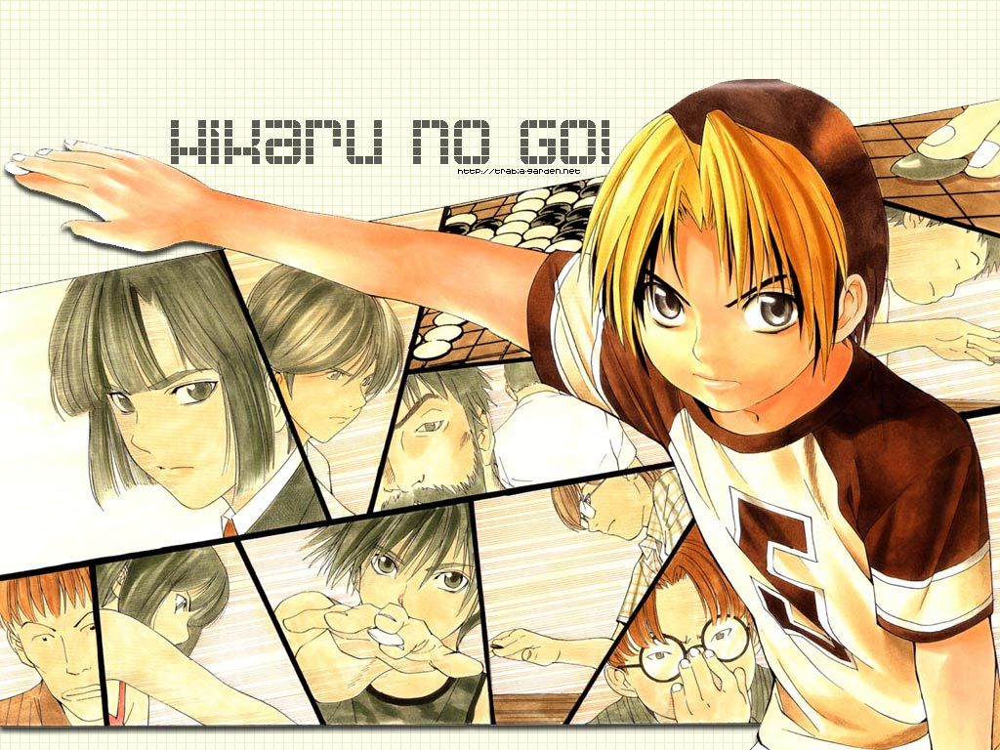
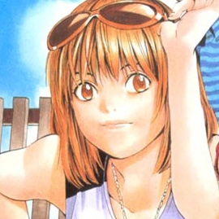

|
Hikaru Shindo is the main protagonist of the "Hikaru no Go" manga and
anime series. He is
a
12-year-old boy who initially has no interest in the game of Go, but is eventually drawn
into the world of Go through his encounter with the spirit Sai. |
Akira is a highly skilled Go player who is well-known for his cool and composed demeanor,
as
well as his strategic mind and exceptional talent for the game. He is considered one of
the
best players of his generation and is highly respected by other players. Despite his
success, Akira is humble and always strives to improve his skills and play the game to
the
best of his ability. |
Sai is an ancient spirit who has been trapped within the Go board for centuries. He is
initially encountered by Hikaru Shindo, the protagonist of the series, and quickly
becomes
his friend and mentor. Despite being a ghost, Sai is a knowledgeable and wise figure who
has
a deep understanding of the game of Go and its history and culture. |
 


